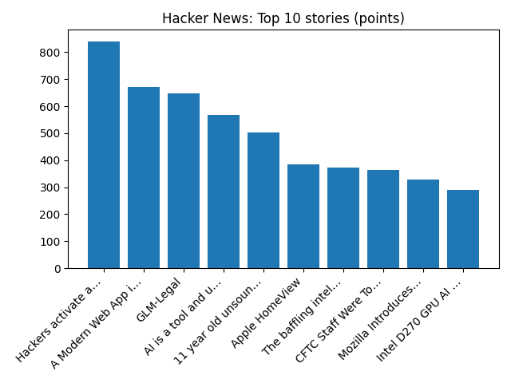

YOUR DAILY INTELLIGENCE BRIEF · 2026-10-13
The world, in focus.
No recent news coverage available.
🌍 Global coverage
🌌 Beyond Earth

Desert Stairway to Heaven
📜 On this day
- 2019 Kenyan Brigid Kosgei sets a new women's world record with a time of 2:14:04 at the 2019 Chicago Marathon.
- 2016 The Maldives announces its decision to withdraw from the Commonwealth of Nations.
- 2013 A stampede occurs in India during the Hindu festival Navratri, killing 115 and injuring more than 110.
- 2010 The mining accident in Copiapó, Chile ends as all 33 trapped miners arrive at the surface after a record 69 days underground.
📈 Topic activity
Source health: 24/24 healthy
View original detailed report
Daily Knowledge Garden — 2026-10-13
🧭 Daily Summary
Global coverage includes Trump is heading all the way to Alaska in a sign of just how close its Senate race may be - AP News; Pope admitted to hospital for surgery to remove lump on his lung; Trump's ambassador to Greece, Kimberly Guilfoyle, resigns after allegations of improper conduct - AP News. Local coverage includes Northern Virginia Halloween Haunt - FOX 5 DC; Virginia seeing big increases in early voting numbers. What does that mean? - WUSA9.
🌍 Global News (cross-source)
- Trump is heading all the way to Alaska in a sign of just how close its Senate race may be - AP News — AP — Politics (Google News)
- Pope admitted to hospital for surgery to remove lump on his lung — BBC — World
- Trump's ambassador to Greece, Kimberly Guilfoyle, resigns after allegations of improper conduct - AP News — AP — Politics (Google News)
- Saudi Arabia strikes Yemen capital as Houthis vow to retaliate - Reuters — Reuters — Headlines (Google News)
- Bumble swipes right on $1.3 billion go-private deal amid online dating industry reset - Reuters — Reuters — Headlines (Google News)
🏙️ Local News
- Northern Virginia Halloween Haunt - FOX 5 DC — Google News — Northern Virginia
- Virginia seeing big increases in early voting numbers. What does that mean? - WUSA9 — Google News — Northern Virginia
- GazetteLeader archives available on FFXnow, adding to past Fairfax coverage - FFXnow — Google News — Northern Virginia
- Lucia Wilson Obituary (2026) - Berryville, VA - Northern Virginia Daily - Legacy | Obituary — Google News — Northern Virginia
- High School Football Top 25 (D.C., Maryland, and Northern Virginia) - The MoCo Show - — Google News — Northern Virginia
🚀 Hacker News (Top 5)
- Muse Wonder — 534 points, 299 comments
- Codex CLI installs a persistent, self-updating background daemon by default — 478 points, 242 comments
- Hackers activate automatic defrosting in supermarket fridges across Europe — 464 points, 670 comments
- GLM-Legal — 444 points, 249 comments
- A Modern Web App in C — 409 points, 166 comments

🌍 Wikipedia — On This Day (selected)
- 2019 — Kenyan Brigid Kosgei sets a new women's world record with a time of 2:14:04 at the 2019 Chicago Marathon.
- 2016 — The Maldives announces its decision to withdraw from the Commonwealth of Nations.
- 2013 — A stampede occurs in India during the Hindu festival Navratri, killing 115 and injuring more than 110.
- 2010 — The mining accident in Copiapó, Chile ends as all 33 trapped miners arrive at the surface after a record 69 days underground.
- 1993 — At least 60 people die in eastern Papua New Guinea when a series of earthquakes rock the Finisterre Range, triggering massive landslides.
🎲 Wikipedia — Random Article
Yepifan
Population: 2,237 (2010 census); 2,377 (2002 census); 2,457 (1989 Soviet census). Yepifan was founded by Knyaz Ivan Mstislavsky (Ivan the Terrible's cousin) as a fort (Yepifan Fortress) against the Crimean Tatars (see Great Abatis Border).
https://en.wikipedia.org/wiki/Yepifan
🌌 NASA APOD
Feed Health
- Reuters — Headlines (Google News): ok (15 articles)
- Reuters — World (Google News): ok (15 articles)
- Reuters — Business (Google News): ok (15 articles)
- BBC — World: ok (15 articles)
- BBC — Tech: ok (15 articles)
- BBC — Business: ok (15 articles)
- BBC — Science: ok (15 articles)
- AP — Headlines (Google News): ok (15 articles)
- AP — Politics (Google News): ok (15 articles)
- AP — Business (Google News): ok (15 articles)
- NPR — Top Stories: ok (10 articles)
- NPR — Politics: ok (10 articles)
- NPR — Business: ok (10 articles)
- NPR — Science: ok (10 articles)
- NPR — Technology: ok (10 articles)
- ScienceNews: ok (15 articles)
- ScienceDaily — Top: ok (15 articles)
- Nature — Technology: ok (15 articles)
- Google News — Northern Virginia: ok (15 articles)
- Google News — Northern Virginia traffic: ok (15 articles)
- Google News — Northern Virginia weather: ok (15 articles)
- Wikipedia — On This Day: ok (10 articles)
- Wikipedia — Random: ok (1 articles)
- NASA — APOD: ok (1 articles)
Runs so far today: 2